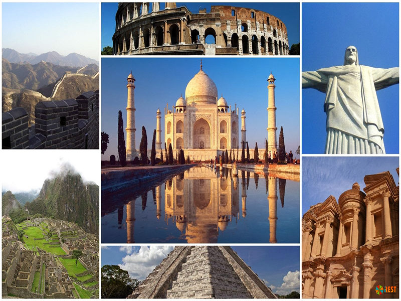

| Сім чудес світу — це перелік найвидатніших архітектурних і культурних пам’яток людства, який був сформований у 2007 році за результатами всесвітнього голосування, організованого New7Wonders Foundation. До списку увійшли споруди, створені в різні епохи та на різних континентах. Вони вражають масштабом, інженерною досконалістю, художньою цінністю та історичним значенням і є символами культурної спадщини людства. | |
| 1. Велика Китайська стіна.
Одна з найдовших споруд у світі, протяжність якої перевищує 21 тисячу кілометрів. Зводилася
протягом
багатьох століть для захисту Китаю від кочових племен. Стіна є символом наполегливості, сили та
інженерного генія китайської цивілізації.
2. Петра. Стародавнє місто в Йорданії, висічене просто в скелях рожевого пісковику. Петра була важливим торговельним центром Набатейського царства. Найвідоміша споруда — Аль-Хазне (Скарбниця), яка вражає своєю монументальністю та деталізацією. 3. Колізей. Грандіозний амфітеатр у Римі, збудований у I столітті нашої ери. Тут відбувалися гладіаторські бої та публічні видовища. Колізей є символом могутності Римської імперії та одним із найвідоміших архітектурних пам’ятників Європи. 4. Чичен-Іца. Стародавнє місто цивілізації майя, розташоване на півострові Юкатан у Мексиці. Центральною спорудою є піраміда Кукулькана, відома своєю астрономічною точністю: під час рівнодення тінь створює ефект «сповзання змія» сходами піраміди. |
5. Мачу-Пікчу.
Загублене місто інків, розташоване високо в Андах. Мачу-Пікчу вражає гармонійним поєднанням архітектури
та природи. Його призначення досі залишається загадкою, що лише підсилює інтерес до цієї пам’ятки.
6. Тадж-Махал. Мавзолей в Індії, збудований імператором Шах-Джаханом на честь своєї коханої дружини Мумтаз-Махал. Це всесвітньо відомий символ любові, виконаний з білого мармуру та прикрашений коштовним камінням і витонченими орнаментами. 7. Статуя Христа-Спасителя Монументальна статуя Ісуса Христа, що височіє над Ріо-де-Жанейро в Бразилії. Вона є символом християнства, миру та гостинності, а також однією з найвідоміших статуй у світі.  |